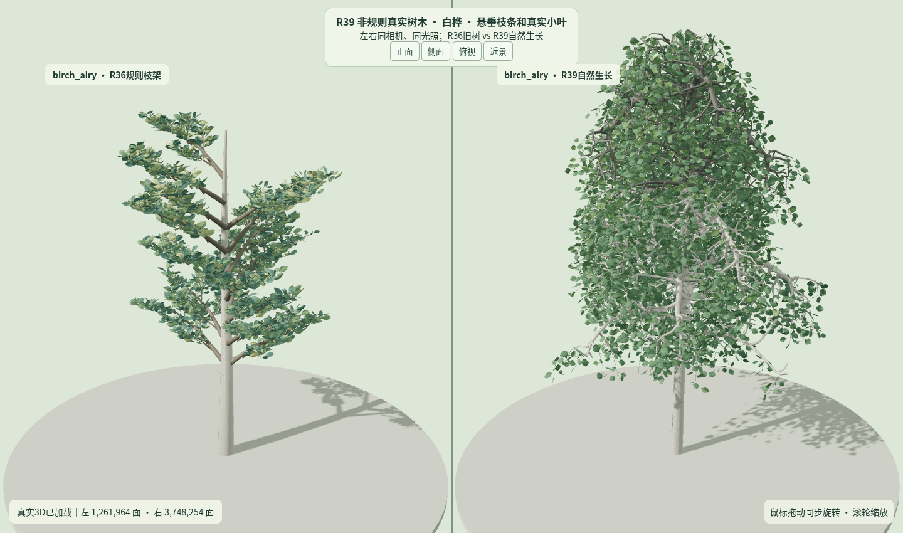
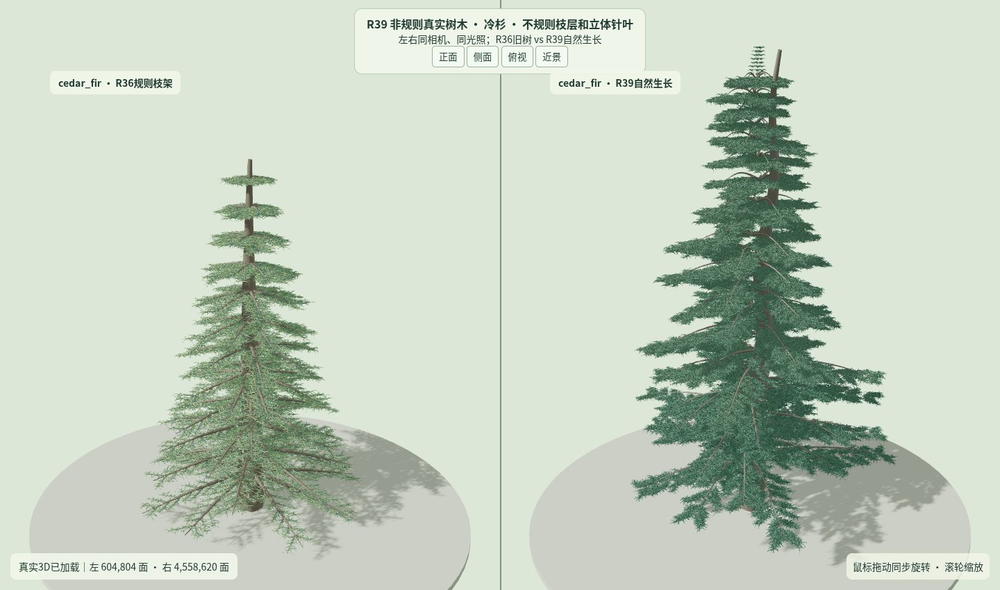

R39 / BETULA · BIRCH
白桦 · 悬垂细枝
白色细长主干、多条向上竞争的分枝轴、逐段下垂的小枝、真实锯齿形卵状叶和几何树皮裂痕。
R36 126 万面 → R39 375 万面。重点验收细枝下垂是否自然、树冠是否留有透光空隙。
打开白桦三维 A/B继 R38 枫树后，重新制作了两种关键树木：白桦不再是规则向外插枝，冷杉不再是一摞均匀的针叶圆盘。下面所有画面均来自真实 Blender 模型在 Chrome / WebGL 中的 A/B 实机截图。左侧旧模型，右侧新模型。

白色细长主干、多条向上竞争的分枝轴、逐段下垂的小枝、真实锯齿形卵状叶和几何树皮裂痕。
R36 126 万面 → R39 375 万面。重点验收细枝下垂是否自然、树冠是否留有透光空隙。
打开白桦三维 A/B
不规则分布的主枝、带重力挠度的枝梢、细分枝上的独立立体针叶；第二次实机调整增加了树冠内部覆盖。
R36 60 万面 → R39 456 万面。重点验收主枝暴露、针叶层次和整体锥形轮廓。
打开冷杉三维 A/B